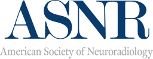
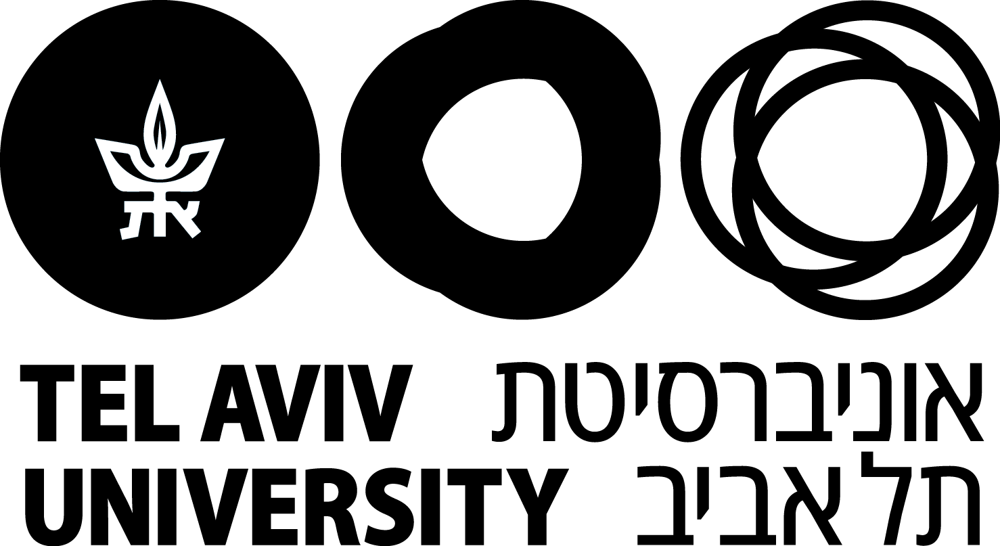
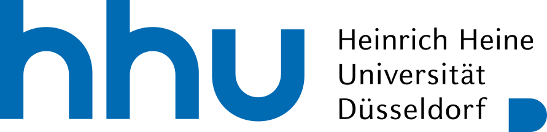
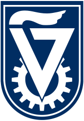

Attending Neuroradiologist · Lecturer · Researcher
Samir Shinnawi
Rambam Health Care Campus, Haifa, IsraelI have trained and practised medicine in Germany and Israel, in four languages: Arabic, English, German and Hebrew. Today I am a neuroradiologist at Rambam, I teach radiology at the Technion, and I hold an International Recognition Award from the ASNR.
Neuroradiology
Neurotrauma and venous sinus thrombosis
Pediatric neuroimaging
Medical education
Public health
languageLANGUAGES
ArabicFluent
EnglishFluent
GermanFluent
HebrewFluent
10Years as a physicianSince graduating in 2016
11Conference presentationsFirst author, ASNR, ECR, ESNR, SAR, ISRA
200+Students tutoredFrom 60 countries
4LanguagesFluent in all four
About
My trajectory
From medical school in Düsseldorf to neuroradiology in Haifa.
2009
school
Medical school
Started Human Medicine at Heinrich Heine University Düsseldorf, Germany.
2011
groups
Tutoring
Began tutoring all pre-clinical subjects at Meditorium, reaching over 200 students from 60 countries by 2015.
2014
verified
USMLE and first aid instruction
Passed USMLE Step 1 and Step 2 and became a board-certified first aid instructor in Düsseldorf.
2016
medical_services
Graduation and first residency
Graduated and started residency in anesthesiology, perioperative care and pain medicine at Sana Hospital Duisburg.
2017
article
First paper, move to Haifa
First co-authored paper in Environmental Research. Moved to Israel for the rotating internship at Rambam Health Care Campus.
2018
workspace_premium
Dr. med., magna cum laude
Doctoral thesis on indoor fine and ultrafine particles and arterial stiffness, supervised by Prof. Barbara Hoffmann, Düsseldorf.
2019
radiology
Radiology residency
Started radiology residency at Rambam Health Care Campus. Joined the Israel Medical Association.
2020
co_present
Lecturer at the Technion
Began lecturing radiology and neuroradiology to 5th- and 6th-year students. Took over the weekly department seminar and journal club. First national talk at ISRA.
2021
public
First international presentation
Imaging triage of the acute abdomen in pregnancy at the Society of Abdominal Radiology. Started lecturing anatomy, pathology and pathophysiology at the Rambam School of Radiology and Imaging.
2022
emoji_events
MPH and first ECR award
Started the MPH at Tel Aviv University and won "Invest in the Youth" at the European Congress of Radiology.
2023
flag
Chief Resident and national delegate
Became Chief Resident, won "Invest in the Youth" a second time, and became National Delegate for Israel at the ESR Radiology Trainee Forum.
2024
workspace_premium
International recognition
ASNR International Recognition Award for the cerebral palsy exhibit, Lois and Martin Whitman Scholarship, and election to the IMA National Committee for Medical Residents.
2025
neurology
Neuroradiology fellowship
Fellowship at Rambam, an invited review in Neurographics, and the ESNR mentor–mentee programme.
2026
stethoscope
Attending Neuroradiologist
Appointed attending neuroradiologist at Rambam and Radiology Expert at the Meta-Analysis Academy. Presenting at ECR Vienna and the ASNR annual meeting.
Research
Publications
Four peer-reviewed papers and a doctoral thesis, in neuroimaging and environmental health.
Recognition
Awards and honors
International Recognition Award: Israel2024 · ASNR annual meeting, for the educational exhibit on imaging of cerebral palsy

Invest in the Youth, twice2022, 2023 · European Congress of Radiology, for educational exhibits
Whitman Scholarship2024 · Lois and Martin Whitman Scholarship for MPH studies

Intercultural Competence2016 · Excellence certificate as a tutor, Heinrich Heine University

Social Engagement2007 · NOAM project for outstanding Arab youth, Technion

Teaching
Educational and teaching achievements
Teaching medical students, radiographers and nurses since 2011.
Technion2020 – now
Lecturer in radiology and neuroradiology for 5th- and 6th-year students, Rappaport Faculty of Medicine. Physiology PBL instructor since 2024.
Rambam2021 – now
Lecturer in anatomy, pathology and pathophysiology at the School of Radiology and Imaging. Lecture for advanced nursing training, 2023.
Mentoring2022 – now
Advisor to the Radiology Special Interest Group, Technion American Medical School. Summer shadowing mentor. MD thesis co-supervisor.
Meditorium2011 – 2015
Tutor in all pre-clinical subjects to over 200 medical students from 60 countries, Heinrich Heine University Düsseldorf.
Contact